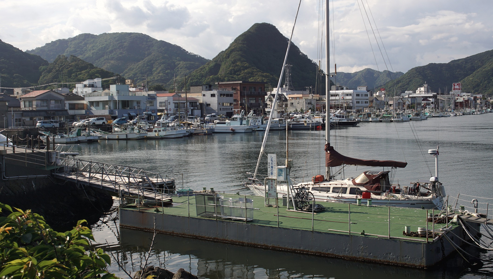
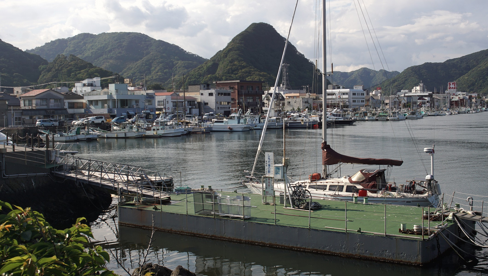

japan

In the spring of 2019, Pino and crew arrived in Japan.
We made landfall in Chichijima, Ogasawara. The sail from Majuro in the marshall islands took 21 days. We stayed for almost a month, exploring the island by bicycle. Then in early March, we made plans to sail to Wakayama, but had to divert to Shimizu (Shizuoka) after encountering bad weather. In Shimizu, we had an amazing view of Fujisan.
We lived in Odaiba from 2012 to 2014, and desperately wanted to return there by sea. We spent a year exploring, but we did not get to sail up the west coast, or visit the inland sea because our stay coincided with the start of the coronavirus pandemic. We self-quarantined in Minamiise, in a rural town in Mie prefecture.
We wrote these guides to help those interested in going to Japan by sea. It is not easy to sail to, but it is worth it.
We also wrote some blog posts about our time there:
While in Japan, we worked on nasu, and learned 6502 assembly.
 
